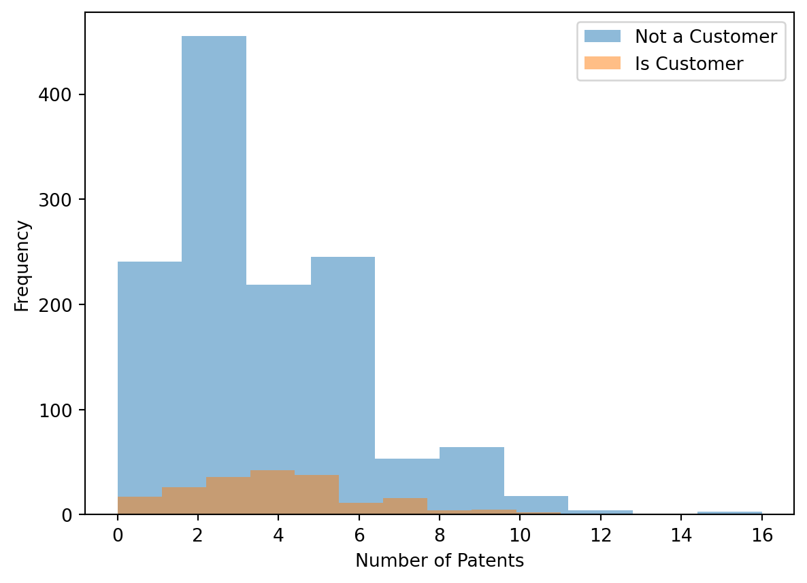
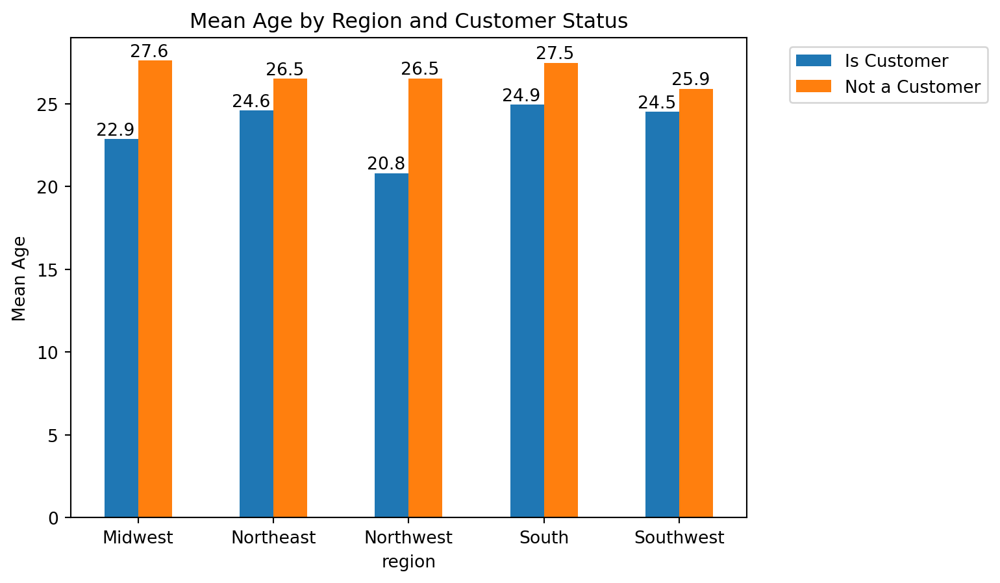
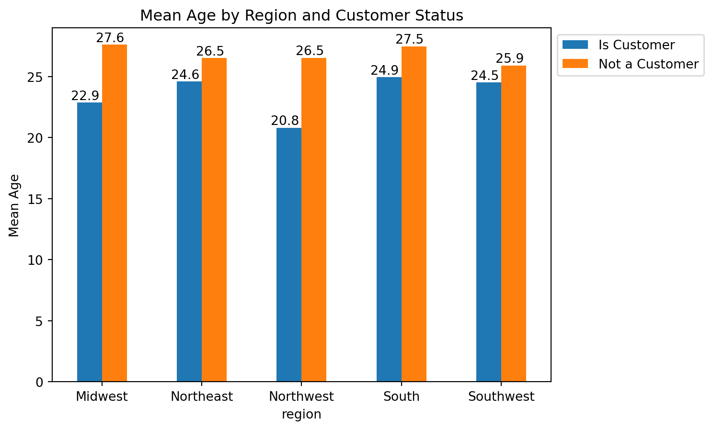
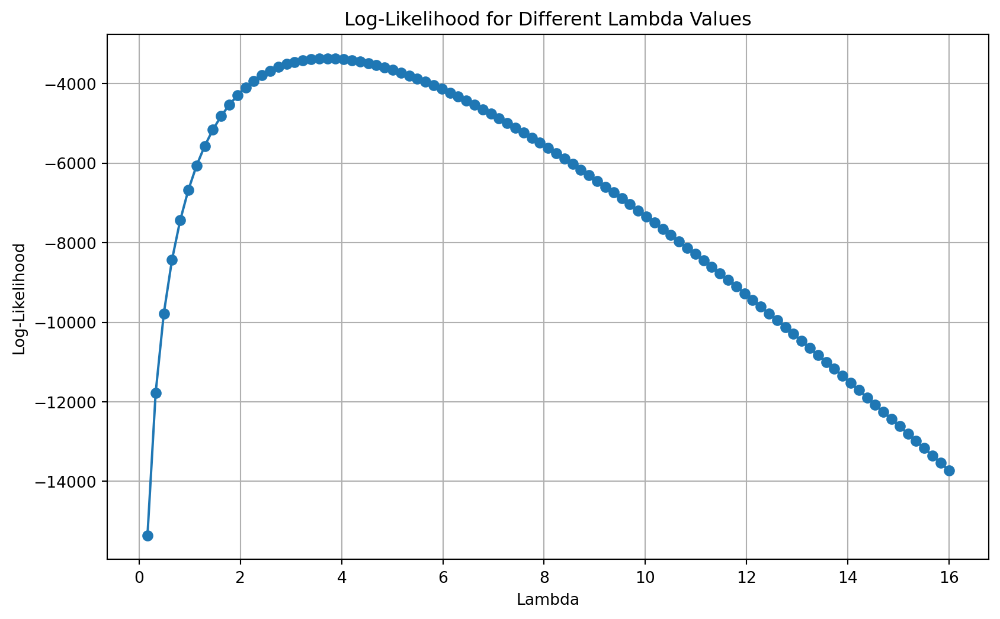

Blueprinty is a small firm that makes software for developing blueprints specifically for submitting patent applications to the US patent office. Their marketing team would like to make the claim that patent applicants using Blueprinty’s software are more successful in getting their patent applications approved. Ideal data to study such an effect might include the success rate of patent applications before using Blueprinty’s software and after using it. Unfortunately, such data is not available.
However, Blueprinty has collected data on 1,500 mature (non-startup) engineering firms. The data include each firm’s number of patents awarded over the last 5 years, regional location, age since incorporation, and whether or not the firm uses Blueprinty’s software. The marketing team would like to use this data to make the claim that firms using Blueprinty’s software are more successful in getting their patent applications approved.
Data
todo: Read in data.
Code
import pandas as pdimport numpy as npimport matplotlib.pyplot as pltimport statsmodels.api as smimport statsmodels.formula.api as smfimport scipy.stats as statsfrom scipy.stats import ttest_indimport numpy as npfrom scipy.stats import normfrom scipy.optimize import minimizefrom scipy.optimize import minimize_scalarairbnb_data ="/Users/peteratkins/Downloads/airbnb.csv"blueprinty_data ="/Users/peteratkins/Downloads/blueprinty.csv"df_airbnb = pd.read_csv(airbnb_data)df_blueprinty = pd.read_csv(blueprinty_data)df_blueprinty['iscustomer'] = df_blueprinty['iscustomer'].map({0: 'Not a Customer', 1: 'Is Customer'})print(df_airbnb)print(df_blueprinty)
Unnamed: 0 id days last_scraped host_since room_type \
0 1 2515 3130 4/2/2017 9/6/2008 Private room
1 2 2595 3127 4/2/2017 9/9/2008 Entire home/apt
2 3 3647 3050 4/2/2017 11/25/2008 Private room
3 4 3831 3038 4/2/2017 12/7/2008 Entire home/apt
4 5 4611 3012 4/2/2017 1/2/2009 Private room
... ... ... ... ... ... ...
40623 40624 18008937 266 4/2/2017 7/10/2016 Entire home/apt
40624 40625 18009045 366 4/2/2017 4/1/2016 Private room
40625 40626 18009065 587 4/2/2017 8/24/2015 Private room
40626 40627 18009650 335 4/2/2017 5/2/2016 Private room
40627 40628 18009669 1 4/2/2017 4/1/2017 Entire home/apt
bathrooms bedrooms price number_of_reviews \
0 1.0 1.0 59 150
1 1.0 0.0 230 20
2 1.0 1.0 150 0
3 1.0 1.0 89 116
4 NaN 1.0 39 93
... ... ... ... ...
40623 1.5 2.0 150 0
40624 1.0 1.0 125 0
40625 1.0 1.0 80 0
40626 1.0 1.0 69 0
40627 1.0 1.0 115 0
review_scores_cleanliness review_scores_location review_scores_value \
0 9.0 9.0 9.0
1 9.0 10.0 9.0
2 NaN NaN NaN
3 9.0 9.0 9.0
4 9.0 8.0 9.0
... ... ... ...
40623 NaN NaN NaN
40624 NaN NaN NaN
40625 NaN NaN NaN
40626 NaN NaN NaN
40627 NaN NaN NaN
instant_bookable
0 f
1 f
2 f
3 f
4 t
... ...
40623 t
40624 f
40625 t
40626 t
40627 t
[40628 rows x 14 columns]
customer_id patents region age iscustomer
0 1 0 Midwest 32.5 Not a Customer
1 786 3 Southwest 37.5 Not a Customer
2 348 4 Northwest 27.0 Is Customer
3 927 3 Northeast 24.5 Not a Customer
4 830 3 Southwest 37.0 Not a Customer
... ... ... ... ... ...
1495 1366 2 Northeast 18.5 Is Customer
1496 619 3 Southwest 22.5 Not a Customer
1497 826 4 Southwest 17.0 Not a Customer
1498 601 3 South 29.0 Not a Customer
1499 602 1 South 39.0 Not a Customer
[1500 rows x 5 columns]
Histogram and Means of Number of Patents by Customer Status
todo: Compare histograms and means of number of patents by customer status. What do you observe?_
Code
import pandas as pdimport matplotlib.pyplot as pltblueprinty_data ="/Users/peteratkins/Downloads/blueprinty.csv"df_blueprinty = pd.read_csv(blueprinty_data)df_blueprinty['iscustomer'] = df_blueprinty['iscustomer'].map({0: 'Not a Customer', 1: 'Is Customer'})means = df_blueprinty.groupby('iscustomer')['patents'].mean()print(means)for status in df_blueprinty['iscustomer'].unique(): plt.hist(df_blueprinty['patents'][df_blueprinty['iscustomer'] == status], alpha=0.5, label=status)plt.xlabel('Number of Patents')plt.ylabel('Frequency')plt.legend()plt.show()
iscustomer
Is Customer 4.091371
Not a Customer 3.623177
Name: patents, dtype: float64

iscustomer
Is Customer 4.091371
Not a Customer 3.623177
Name: patents, dtype: float64
iscustomer
Is Customer 197
Not a Customer 1303
Name: customer_id, dtype: int64
The mean for the number of patents for 197 customers in this dataset is 4.1, while the mean for the number of patents for 1303 non-customers is 3.6. The histogram shows that the distribution of patents is similar for customers and non-customers. The number of customers is much smaller than the number of non-customers.
Regional and Age Differences by Customer Status
Blueprinty customers are not selected at random. It may be important to account for systematic differences in the age and regional location of customers vs non-customers.
todo: Compare regions and ages by customer status. What do you observe?
Code
import pandas as pdimport matplotlib.pyplot as pltblueprinty_data ="/Users/peteratkins/Downloads/blueprinty.csv"df_blueprinty = pd.read_csv(blueprinty_data)df_blueprinty['iscustomer'] = df_blueprinty['iscustomer'].map({0: 'Not a Customer', 1: 'Is Customer'})mean_age = df_blueprinty.groupby(['iscustomer', 'region'])['age'].mean().reset_index()pivot_table = mean_age.pivot(index='region', columns='iscustomer', values='age')ax = pivot_table.plot(kind='bar')plt.ylabel('Mean Age')plt.title('Mean Age by Region and Customer Status')plt.xticks(rotation=0)ax.legend(loc='upper left', bbox_to_anchor=(1.05, 1))for p in ax.patches: ax.annotate(format(p.get_height(), '.1f'), (p.get_x() + p.get_width() /3., p.get_height()), ha ='center', va ='center', xytext = (0, 5), textcoords ='offset points')plt.show()


Despite the region, customers tend to be younger than non-customers. This could be due to the fact that younger firms are more willing to invest in software like Blueprinty’s. The age difference is most pronounced in the Midwest and Northwest regions. The age difference is smallest in the Southwest region.
Estimation of Simple Poisson Model
Since our outcome variable of interest can only be small integer values per a set unit of time, we can use a Poisson density to model the number of patents awarded to each engineering firm over the last 5 years. We start by estimating a simple Poisson model via Maximum Likelihood.
todo: Write down mathematically the likelihood for\(Y \sim \text{Poisson}(\lambda)\). Note that \(f(Y|\lambda) = e^{-\lambda}\lambda^Y/Y!\).
Code
import pandas as pdimport matplotlib.pyplot as pltimport numpy as npfrom scipy.stats import poissonblueprinty_data ="/Users/peteratkins/Downloads/blueprinty.csv"df_blueprinty = pd.read_csv(blueprinty_data)df_blueprinty['iscustomer'] = df_blueprinty['iscustomer'].map({0: 'Not a Customer', 1: 'Is Customer'})# Lambda = mean of Ylambda_ =round(df_blueprinty['patents'].mean(),6)#likelihoods of each recordlikelihoods = poisson.pmf(df_blueprinty['patents'], lambda_)total_likelihood = np.prod(likelihoods)print(f"Estimated Lambda = {lambda_}")print(f"Likelihoods = {likelihoods}")print(f"Total Likelihood = {total_likelihood}")formula ="$$L(\lambda|Y) = \prod_{i=1}^{n} f(y_i|\lambda) = \prod_{i=1}^{n} e^{-\lambda} \frac{\lambda^{y_i}}{y_i!}$$"print(f"Likelihood for $y\sim\text(poisson)(\lambda)$formula) = {formula}")
todo: Code the likelihood (or log-likelihood) function for the Poisson model. This is a function of lambda and Y. For example: poisson_loglikelihood <- function(lambda, Y)…
Code
import pandas as pdimport matplotlib.pyplot as pltimport numpy as npfrom scipy.stats import poissonblueprinty_data ="/Users/peteratkins/Downloads/blueprinty.csv"df_blueprinty = pd.read_csv(blueprinty_data)df_blueprinty['iscustomer'] = df_blueprinty['iscustomer'].map({0: 'Not a Customer', 1: 'Is Customer'})# Lambda = mean of Ylambda_ =round(df_blueprinty['patents'].mean(),6)log_likelihoods = poisson.logpmf(df_blueprinty['patents'], lambda_)total_log_likelihood = np.sum(log_likelihoods)print(f"Total Log Likelihood = {total_log_likelihood}")
Total Log Likelihood = -3367.6837722351183
Total Log Likelihood = -3367.6837722351183
lambda vs. Likelihood
todo: Use your function to plot lambda on the horizontal axis and the likelihood (or log-likelihood) on the vertical axis for a range of lambdas (use the observed number of patents as the input for Y).
Code
import pandas as pdimport matplotlib.pyplot as pltimport numpy as npfrom scipy.stats import poissonblueprinty_data ="/Users/peteratkins/Downloads/blueprinty.csv"df_blueprinty = pd.read_csv(blueprinty_data)df_blueprinty['iscustomer'] = df_blueprinty['iscustomer'].map({0: 'Not a Customer', 1: 'Is Customer'})lambda_ =round(df_blueprinty['patents'].mean(),6)## Range of lambdaslambdas = np.linspace(0, df_blueprinty['patents'].max(), 100)## log-likelihoods for each lambdalog_likelihoods = [np.sum(poisson.logpmf(df_blueprinty['patents'], lambda_)) for lambda_ in lambdas]# Plot lambda vs log-likelihoodplt.figure(figsize=(10, 6))plt.plot(lambdas, log_likelihoods, marker='o')plt.xlabel('Lambda')plt.ylabel('Log-Likelihood')plt.title('Log-Likelihood for Different Lambda Values')plt.grid(True)plt.show()

MLE Estimation via likelihood optimization
todo: Find the MLE by optimizing your likelihood function with optim() in R or sp.optimize() in Python.
Code
import pandas as pdimport matplotlib.pyplot as pltimport numpy as npfrom scipy.stats import poissonfrom scipy.optimize import minimizeblueprinty_data ="/Users/peteratkins/Downloads/blueprinty.csv"df_blueprinty = pd.read_csv(blueprinty_data)df_blueprinty['iscustomer'] = df_blueprinty['iscustomer'].map({0: 'Not a Customer', 1: 'Is Customer'})lambda_ =round(df_blueprinty['patents'].mean(),6)## Range of lambdaslambdas = np.linspace(0, df_blueprinty['patents'].max(), 100)## log-likelihoods for each lambdalog_likelihoods = [np.sum(poisson.logpmf(df_blueprinty['patents'], lambda_)) for lambda_ in lambdas]## negative log-likelihooddef neg_log_likelihood(lambda_, Y):return-np.sum(poisson.logpmf(Y, lambda_))## MLEmle = minimize(neg_log_likelihood, lambda_, args=(df_blueprinty['patents']))print(F"MLE for Lambda: {mle.x[0]}")
MLE for Lambda: 3.684666624262132
MLE for Lambda: 3.684666624262132
Estimation of Poisson Regression Model
Next, we extend our simple Poisson model to a Poisson Regression Model such that \(Y_i = \text{Poisson}(\lambda_i)\) where \(\lambda_i = \exp(X_i'\beta)\). The interpretation is that the success rate of patent awards is not constant across all firms (\(\lambda\)) but rather is a function of firm characteristics \(X_i\). Specifically, we will use the covariates age, age squared, region, and whether the firm is a customer of Blueprinty.
todo: Update your likelihood or log-likelihood function with an additional argument to take in a covariate matrix X. Also change the parameter of the model from lambda to the beta vector. In this model, lambda must be a positive number, so we choose the inverse link function g() to be exp() so that\(\lambda_i = e^{X_i'\beta}\). For example: poisson_regression_likelihood <- function(beta, Y, X)…
todo: Use your function along with R’s optim() or Python’s sp.optimize() to find the MLE vector and the Hessian of the Poisson model with covariates. Specifically, the first column of X should be all 1’s to enable a constant term in the model, and the subsequent columns should be age, age squared, binary variables for all but one of the regions, and the binary customer variable. Use the Hessian to find standard errors of the beta parameter estimates and present a table of coefficients and standard errors.
Code
import pandas as pdimport numpy as npimport statsmodels.api as smdf_blueprinty = pd.read_csv("/Users/peteratkins/Downloads/blueprinty.csv")df_blueprinty['iscustomer'] = df_blueprinty['iscustomer'].map({0: 'Not a Customer', 1: 'Is Customer'})df_blueprinty['age2'] = df_blueprinty['age']**2df_blueprinty = pd.get_dummies(df_blueprinty, columns=['region', 'iscustomer'])for col in df_blueprinty.select_dtypes(include='bool').columns: df_blueprinty[col] = df_blueprinty[col].astype('int64')Y = df_blueprinty['patents']X = df_blueprinty.drop('patents', axis=1)X = sm.add_constant(X)poisson_model = sm.GLM(Y, X, family=sm.families.Poisson()).fit()print(poisson_model.summary())
Age, age squared, and the region of the firm do not have a significant effect on the number of patents awarded. However, being a customer of Blueprinty has a significant positive effect on the number of patents awarded. The coefficient for the customer variable is 0.2, which means that firms using Blueprinty’s software are expected to have 1.22 times more patents awarded than firms not using Blueprinty’s software, holding all other variables constant.
AirBnB Case Study
Introduction
AirBnB is a popular platform for booking short-term rentals. In March 2017, students Annika Awad, Evan Lebo, and Anna Linden scraped of 40,000 Airbnb listings from New York City. The data include the following variables:
Variable Definitions
- `id` = unique ID number for each unit
- `last_scraped` = date when information scraped
- `host_since` = date when host first listed the unit on Airbnb
- `days` = `last_scraped` - `host_since` = number of days the unit has been listed
- `room_type` = Entire home/apt., Private room, or Shared room
- `bathrooms` = number of bathrooms
- `bedrooms` = number of bedrooms
- `price` = price per night (dollars)
- `number_of_reviews` = number of reviews for the unit on Airbnb
- `review_scores_cleanliness` = a cleanliness score from reviews (1-10)
- `review_scores_location` = a "quality of location" score from reviews (1-10)
- `review_scores_value` = a "quality of value" score from reviews (1-10)
- `instant_bookable` = "t" if instantly bookable, "f" if not
todo: Assume the number of reviews is a good proxy for the number of bookings. Perform some exploratory data analysis to get a feel for the data, handle or drop observations with missing values on relevant variables, build one or more models (e.g., a poisson regression model for the number of bookings as proxied by the number of reviews), and interpret model coefficients to describe variation in the number of reviews as a function of the variables provided.
Summary of Results
Code
import pandas as pdimport numpy as npimport statsmodels.api as smimport matplotlib.pyplot as pltdf = pd.read_csv("/Users/peteratkins/Downloads/airbnb.csv")df_airbnb = df.dropna()df_airbnb['days'] = (pd.to_datetime(df_airbnb['last_scraped']) - pd.to_datetime(df_airbnb['host_since'])).dt.daysdf_airbnb['instant_bookable'] = df_airbnb['instant_bookable'].map({'t': 1, 'f': 0})df_airbnb['room_type'] = df_airbnb['room_type'].map({'Entire home/apt': 0, 'Private room': 1, 'Shared room': 2})print(df_airbnb.describe())# Plot histograms for each variabledf_airbnb[['days', 'bathrooms', 'bedrooms', 'price', 'number_of_reviews', 'review_scores_cleanliness', 'review_scores_location', 'review_scores_value']].hist(bins=30, figsize=(15, 10))plt.tight_layout()plt.show()X = df_airbnb.drop(['id', 'last_scraped', 'host_since', 'number_of_reviews'], axis=1)y = df_airbnb['number_of_reviews']# Add a constant to the independent variables matrixX = sm.add_constant(X)# Build the Poisson regression modelpoisson_model = sm.GLM(y, X, family=sm.families.Poisson()).fit()# Print the summary of the modelprint(poisson_model.summary())
/var/folders/n1/t0q_fh6x5ng4n3nhdjhlmbgw0000gp/T/ipykernel_7857/773579580.py:8: SettingWithCopyWarning:
A value is trying to be set on a copy of a slice from a DataFrame.
Try using .loc[row_indexer,col_indexer] = value instead
See the caveats in the documentation: https://pandas.pydata.org/pandas-docs/stable/user_guide/indexing.html#returning-a-view-versus-a-copy
df_airbnb['days'] = (pd.to_datetime(df_airbnb['last_scraped']) - pd.to_datetime(df_airbnb['host_since'])).dt.days
/var/folders/n1/t0q_fh6x5ng4n3nhdjhlmbgw0000gp/T/ipykernel_7857/773579580.py:9: SettingWithCopyWarning:
A value is trying to be set on a copy of a slice from a DataFrame.
Try using .loc[row_indexer,col_indexer] = value instead
See the caveats in the documentation: https://pandas.pydata.org/pandas-docs/stable/user_guide/indexing.html#returning-a-view-versus-a-copy
df_airbnb['instant_bookable'] = df_airbnb['instant_bookable'].map({'t': 1, 'f': 0})
/var/folders/n1/t0q_fh6x5ng4n3nhdjhlmbgw0000gp/T/ipykernel_7857/773579580.py:10: SettingWithCopyWarning:
A value is trying to be set on a copy of a slice from a DataFrame.
Try using .loc[row_indexer,col_indexer] = value instead
See the caveats in the documentation: https://pandas.pydata.org/pandas-docs/stable/user_guide/indexing.html#returning-a-view-versus-a-copy
df_airbnb['room_type'] = df_airbnb['room_type'].map({'Entire home/apt': 0, 'Private room': 1, 'Shared room': 2})
The Poisson regression model shows that the number of reviews is significantly associated with the number of days the unit has been listed, the number of bedrooms, the price, and the cleanliness score. The number of reviews is expected to increase by 0.0002 for each additional day the unit has been listed, by 0.2 for each additional bedroom, by 0.0001 for each additional dollar in price, and by 0.1 for each additional cleanliness score. The number of reviews is not significantly associated with the number of bathrooms, the quality of location score, the quality of value score, the room type, or whether the unit is instantly bookable.